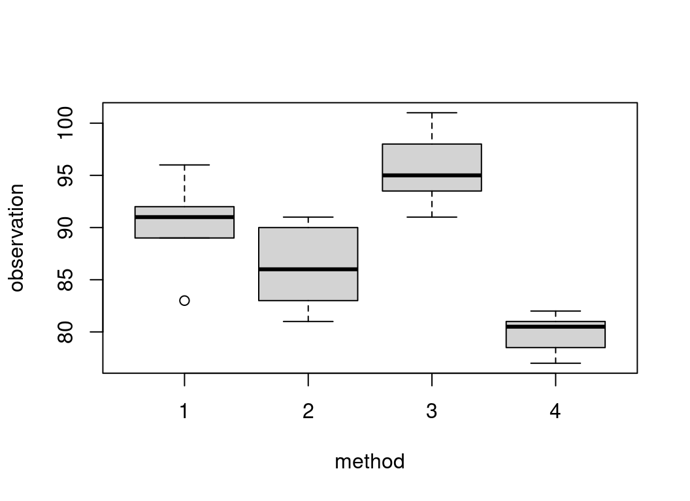

[1] 1 2 3 4 5 6 7 8 9 10 11 1250%
6.5 25% 50% 75%
3.75 6.50 9.25 Dr. Cohen
This course covers an introduction to nonparametric statistics methods as follows:
⚠️ Slides are being updated…
The next time you read a newspaper, look for items such as the following:
The numerical facts or data in the news items (\(53\%\), \(\$74, 500\), 4.9%) commonly are referred to as statistics.
In common, everyday usage, the term statistics refers to numerical facts.
Let’s \(X \sim p(x)\) be a discrete r.v., then the expected value:
\[E(X) = \sum_{\forall x} x p(x)\]
Let’s \(X \sim f(x)\) be a continuous r.v., then the expected value:
\[E(X) = \int_{\forall x} x f(x) dx \]
R is a free software environment for statistical computing and graphics.
RStudio is an integrated development environment (IDE) for R and Python, with a console, syntax-highlighting editor, and other features.
Quarto is an open-source scientific and technical publishing system.
In this class, we will use the UWF RStudio Server. Log in using your UWF account. Go to UWF RStudio Server
The number \(x_p\) (\(0 \leq p \leq 1\)) is called the \(p^{th}\) quantile of a random variable \(X\) if:
- Continuous: \(P(X\leq x_p) = p\)
- Discrete: \(P(X < x_p) \leq p\) AND \(P(X\leq x_p) \geq p\)
We can think of quantiles as points that split the distribution (values of \(X\)) into equal intervals.
Examples:
Let’s \(X\) be a r.v. with PMF:
| x | 0 | 1 | 2 | 3 |
|---|---|---|---|---|
| P(X=x) | 1/4 | 1/4 | 1/3 | 1/6 |
What is \(x_{0.75}\) the upper-quartile?
Solution: Find \(x_{0.75}\) that satisfies \(P(X < x_{0.75}) \leq 0.75\) AND \(P(X\leq x_{0.75}) \geq 0.75\); if more than one value satisfy this then the average of all values is the answer. (\(x_{0.75}\)=2)
What is \(x_{0.5}\) the median?
Solution: Find \(x_{0.5}\) that satisfies \(P(X < x_{0.5}) \leq 0.5\) AND \(P(X\leq x_{0.5}) \geq 0.5\); if more than one value satisfy this then the average of all values is the answer.(\(x_{0.5}\)=1.5)
Example 1:
[1] 1 2 3 4 5 6 7 8 9 10 11 1250%
6.5 25% 50% 75%
3.75 6.50 9.25 Example 2:
Hypothesis Testing is the process of inferring from a sample whether or not a given statement about the population appears to be true.
Null hypothesis - \(H_0\): it is usually formulated for the express purpose of being rejected. No differences. Example: “The process is in-control” in quality control.
Alternative Hypothesis - \(H_1\): \(H_0\) is rejected. It is the statement that the experimenter would like to prove. There are differences. For example, the alternative hypothesis could be “the quality of the product or service is unsatis- factory” or process is out of control”.
The Test Statistic is chosen to be sensitive to the difference between the null hypothesis and the alternative hypothesis.
Level of significance (\(\alpha\)): When the null hypothesis and the alternative hypothesis have been stated, and when the appropriate statistical test has been selected, the next step is to specify a level of significance \(\alpha\) and a sample size. Since the level of significance goes into the determination of whether \(H_0\) is or is not rejected, the requirement of objectivity demands that \(\alpha\) be set in advance. This is also called Type I Error.
\[ \alpha = P(Reject~H_0~|~ H_0~is~True) \]
The Null distribution is the distribution of the test statistic when \(H_0\) is TRUE. This defines the rejection region along with the level of significance.
The Power: The probability of rejecting \(H_0\) when it is in fact FALSE. \[Power = 1 - \beta = P(Rejecting~ H_0 | H_0 ~is~FALSE)\]
P-value is the probability, computed assuming that \(H_0\) is TRUE, that the test statistic would take a value as extreme or more extreme than that actually observed.
Accepting or Failing to Reject \(H_0\) does not mean that the data prove the null hypothesis to be true. Read the ASA statement on p-values
A binomial experiment has the following properties:
random variable \(Y\) is the number of successes (\(yesS\)) observed during the \(n\) trials.Consider \(Y \sim binom(n,p)\), then \(Y\) can take on values \(0, 1, 2, 3,\ldots, n\). The probability mass function is given by \[\begin{align} p(y)=&P(Y=y)=\binom{n}{y}p^y q^{n-y}, \\ y=&0,1,2,\ldots,n ; \qquad 0\leq p \leq 1 ; \quad q=1-p \end{align}\] The expected value of \(Y\) is: \[\begin{align}E(Y)=np\\end{align} The Variance $Y$ is: \begin{align} V(Y)=npq \end{align}\]
There are some populations which are conceived as consisting of only two classes:
For such cases all the population observations will fall into either one or the other of the two classes. If we know that the proportion of cases in one class is \(p\), sometimes we are interested to estimate/test the population proportion \(p\).
the number of times the outcomes is in class1.\[ H_0: p=p^* \] \[H_1: p \neq p^* \]
- The rejection region is defined by \(t_1\) and \(t_2\) as follows: \[ P( T \leq t_1) \approx \alpha/2 \] \[ P( T \leq t_2) \approx 1- \alpha/2 \]
P-value\(= 2\times \min\{ P( Y \leq T_{Obs}), P(Y \geq T_{Obs}) \}\). If greater than 1 then \(P-value=1\).\[ H_0: p \geq p^* \] \[H_1: p < p^* \]
The rejection region is defined by \(t_1\) as follows: \[P( T \leq t_1) \approx \alpha \]
P-value \(=P(Y \leq T_{Obs})\)
\[ H_0: p \leq p^* \] \[H_1: p > p^* \] The rejection region is defined by \(t_2\) as follows:
\[P( T \leq t_2) \approx 1-\alpha \]
P-value \(=P(Y \geq T_{Obs})\)We want to know whether the passing rate for a course is \(75\%\). We have a sample of \(n=15\) students taking the course and only 8 passed. Level of significance is \(5\%\). Test the appropriate hypothesis.
Define the null and alternative hypotheses
\[ H_0: p=0.75 \] \[H_1: p \neq 0.75 \]
Find the Test statistic observed and null distribution
\(T_{obs}=8\) and \(T\sim bin(15,0.75)\)
Determine critical values (rejection region)
t_1=8 and t_2=14
Find P-value
p-value=0.1132406
Decision and Interpretation
Since P-value > 0.05 then Fail to Reject \(H_0\). There is evidence that suggests that the passing rate of the course is 75%.
binom.test(x = 8, # number of successes (#students pass)
n = 15, # sample size
p = 0.75, # hypothesized p
alternative = 'two.sided', # two-tailed test
conf.level = 0.95) # Confidence Interval
Exact binomial test
data: 8 and 15
number of successes = 8, number of trials = 15, p-value = 0.06998
alternative hypothesis: true probability of success is not equal to 0.75
95 percent confidence interval:
0.2658613 0.7873333
sample estimates:
probability of success
0.5333333 Interpretation: Fail to Reject \(H_0\). There is evidence to support that the passing rate of the course is not significantly different from p-value=0.07 [\(95\%CI (0.27,0.79)\)].The p-value calculation in R is:
Two statistics are considered for this test:
Both test statistics, under the null hypothesis, are binomial(n,p=p*)
\[ H_0: x_p^*=x^* \text{ the p*th quantile of X is x*}\] \[H_1: x_p^* \neq x^* \text{ the p*th quantile of X is not x*}\]
P-value\(= 2\times \min\{ P( T_1 \leq T_{1,Obs}), P(T_2 \geq T_{2,Obs}) \}\).\[ H_0: x_p^* \leq x^* (P(X<x^*) \geq p^*) \] \[H_1: x_p^* > x^* (P(X<x^*) < p^*) \]
P-value \(=P(T_1 \leq T_{1,Obs})\)\[ H_0: x_p^* \geq x^* (P(X<x^*) \leq p^* \] \[H_1: x_p^* < x^* (P(X<x^*) > p^*) \] The rejection region is defined by \(t_2\) as follows:
P-value \(=P(T_2 \geq T_{2,Obs})\)High school examination scores (X) to college admission studies showed that the upper-quartile \(X_{0.75} = 193\). A sample of 15 graduate student from a high school had the following scores
Test if the upper quartile of the population of this high school student is still 193.
We use a two-tailed quantile test to answer the question.
Define the null and alternative hypotheses
\[H_0: X_{0.75}=193\] \[H_1: X_{0.75}\neq 193 \]
Find the Test statistics observed and null distribution
\(T_{1,obs}=7\), \(T_{2,obs}=6\), and \(T\sim bin(15,0.75)\)
Find P-value
p-value=0.0345997
Decision and Interpretation
Since P-value < 0.05 then Reject \(H_0\). There is evidence that suggests that the upper quartile of the examination score is not 193.
The sign test is a binomial test with \(p=0.5\).
It is useful for testing whether one random variable in a pair \((X, Y)\) tends to be larger than the other random variable in the pair.
Example: Consider a clinical investigation to assess the effectiveness of a new drug designed to reduce repetitive behavior, we can compare time before and after taking the new drug.
This test can be use as alternative to the parametric t-paired test.
The data consist of observations on a bivariate random sample \((X_i, Y_i)\), where \(n'\) is the number of the pairs. If the X’s and Y’s are independent, then the more powerful Mann-Whitney test is more appropriate.
Within each pair \((X_i, Y_i)\) a comparison is made and the pair is classified as:
"+" if \(X_i < Y_i\)"-" if \(X_i > Y_i\)"0" if \(X_i = Y_i\) (tie)The test statistic is defined as follows:
\[T = \text{Total number of +'s}\]
The null distribution is the binomial distribution with \(p=0.5\) and \(n=\text{the number of non-tied pairs}\).
\[ T \sim binomial(n,p=0.5) \]
\[ H_0:E(X_i) = E(Y_i) \text{ or } P(+) = P(-) \] \[H_1: E(X_i) \neq E(Y_i) \text{ or } P(+) \neq P(-) \] - The rejection region is defined by \(t\) and \(n-t\) where: \[ P( Y \leq t) \approx \alpha/2 \]
Decision: IF \((T_{Obs} \leq t\) or \(T\_{Obs} \geq n-t)\) REJECT \(H_0\)
P-value\(= 2\times \min\{ P( Y \leq T_{Obs}), P(Y \geq T_{Obs}) \}\)
\[ H_0:E(X_i) \geq E(Y_i) \text{ or } P(+) \leq P(-) \] \[H_1: E(X_i) < E(Y_i) \text{ or } P(+) > P(-) \] - The rejection region is defined by \(n-t\) as follows: \[P( Y \leq t) \approx \alpha \] - Decision: IF \(T_{Obs} \geq n-t\) REJECT \(H_0\)
P-value\(= P( Y \geq T_{Obs})\)\[ H_0:E(X_i) \leq E(Y_i) \text{ or } P(+) \geq P(-) \] \[H_1: E(X_i) > E(Y_i) \text{ or } P(+) < P(-)\] - The rejection region is defined by \(t\) where: \[P( Y \leq t) \approx \alpha\] - Decision: IF \(T_{Obs} \leq t\) REJECT \(H_0\)
P-value\(= P( Y \leq T_{Obs})\)Is the RTAL significantly longer than RTBL?
"+" if \(RTBL < RTAL\) (#12)"-" if \(RTBL > RTAL\) (#5)"0" if \(RTBL = RTAL\) (tie) (#1)then \(n=17\)
\[ H_0: E(RTBL) \leq E(RTAL) \text{ OR } P(+) \leq P(-) \] \[H_1: E(RTBL) < E(RTAL) \text{ OR } P(+) > P(-) \]
This is an upper-tailed test.
Test statistic: \(T_{obs}=12\) and \(T\sim bin(17,0.5)\)
Determine critical values (rejection region): t = 12
p-value=0.0717316
Decision: p-value < 0.05 then Reject \(H_0\).
Exact binomial test
data: 12 and 17
number of successes = 12, number of trials = 17, p-value = 0.07173
alternative hypothesis: true probability of success is greater than 0.5
95 percent confidence interval:
0.4780823 1.0000000
sample estimates:
probability of success
0.7058824 Interpretation: Fail to Reject \(H_0\). There is evidence to support that the data is compatible with the null hypothesis \(p-value=0.071\) [\(95\%CI (0.48,1)\)].\[ P(X_{(r)} \leq \text{a fraction q of the pop.} \leq X_{(n+1-m)}) \geq 1-\alpha \]
The tolerance limits can be use to find A sample size \(n\) needed to have at least \(q\) proportion of the population between the tolerance limits with \(1-\alpha\) probability.
\[ n \approx \frac{1}{4} \chi^2_{1-\alpha;2(r+m)} \frac{1+q}{1-q} + \frac{1}{2} (r+m-1)\]
where \(\chi^2_{1-\alpha;2(r+m)}\) is the quantile of a chi-squared random variable.
We can find The percent \(q\) of the population that is within the tolerance limits, given n, \(1-\alpha\), \(r\), and \(m\):
\[q=\frac{4n-2(r+m-1)-\chi^2_{1-\alpha;2(r+m)}}{4n-2(r+m-1) + \chi^2_{1-\alpha;2(r+m)}}\]
Electric seat adjusters for a luxury car manufacturer wants to know what range of vertical adjustment is needed to be \(90\%\) sure that at least \(80\%\) of population of potential buyers will be able to adjust their seat.
To answer the question we need to find \(n\)
Next, we need to randomly pick 18 people from the population of potential buyers and collect their adjustments.
Definition A contingency table is an array of natural numbers in matrix form where those numbers represent counts / frequencies
| Col 1 | Col2 | Totals | |
|---|---|---|---|
| row 1 | a | b | a+b |
| row 2 | c | d | c+d |
| Totals | a+c | b+d | a+b+c+d |
2 x 2 contingency table
| Class 1 | Class2 | Totals |
|
|---|---|---|---|
| Population 1 | \(O_{11}\) (\(p_1\)) | \(O_{12}\) | \(n_1\) = \(O_{11}+O_{12}\) |
| Population 2 | \(O_{21}\) (\(p_2\)) | \(O_{22}\) | \(n_2\) = \(O_{21}+O_{22}\) |
Totals |
\(c_1\) = \(O_{11}+O_{21}\) | \(c_2\)= \(O_{12}+O_{22}\) | N = \(n_1+n_1\) |
2 x 2 contingency table
\[ T= \frac{\sqrt{N} (O_{11}O_{22} - O_{12}O_{21})}{\sqrt{n_1n_2c_1c_1}}\] Null distirbution: \(T \sim N(0,1)\)
\[ H_0:p_1 = p_2 \] \[H_1: p_1 \neq p_2 \] - \(p_1\) the probability that a randomly selected obs from the population 1 will be in class 1.
P-value\(= 2\times \min\{ P( T \leq T_{Obs}), P(T \geq T_{Obs}) \}\)
Decision: IF p_value < \(\alpha\) then REJECT \(H_0\)
\[ H_0:p_1 = p_2 \] \[H_1: p_1 < p_2 \] - \(p_1\) the probability that a randomly selected obs from the population 1 will be in class 1.
P-value\(= P( T \leq T_{Obs})\)
Decision: IF p_value < \(\alpha\) then REJECT \(H_0\)
\[ H_0:p_1 = p_2 \] \[H_1: p_1 > p_2 \] - \(p_1\) the probability that a randomly selected obs from the population 1 will be in class 1.
P-value\(= P( T \geq T_{Obs})\)
Decision: IF p_value < \(\alpha\) then REJECT \(H_0\)
The number of items in two car loads are given:
| Defective | Non defective | Totals |
|
|---|---|---|---|
| Carload 1 | a =13 | b=73 | \(n_1\) = 86 |
| Carload 2 | c = 17 | d=57 | \(n_2\) = 74 |
Totals |
\(c_1\) = 30 | \(c_2\)= 130 | N = 160 |
2 x 2 contingency table
Question: Test whether there are differences in proportions of defective items between the two carloads.
Pearson's Chi-squared test with Yates' continuity correction
data: data
X-squared = 1.1372, df = 1, p-value = 0.2863
Pearson's Chi-squared test
data: data
X-squared = 1.6116, df = 1, p-value = 0.2043Interpretation: Fail to Reject \(H_0\). There is evidence to support that the data is compatible with equal proportions p-value=0.2.A new toothpaste is tested for men and women preferences.
| Like | Do not like | Totals |
|
|---|---|---|---|
| Men | a =64 | b=36 | \(n_1\) = 100 |
| Women | c = 74 | d=26 | \(n_2\) = 100 |
Totals |
\(c_1\) = 138 | \(c_2\)= 62 | N = 200 |
2 x 2 contingency table
Question: Do men and women differ in their preferences regarding the new toothpaste?
Pearson's Chi-squared test with Yates' continuity correction
data: data
X-squared = 1.8934, df = 1, p-value = 0.1688
Pearson's Chi-squared test
data: data
X-squared = 2.3375, df = 1, p-value = 0.1263There is insufficient evidence to support that men and women differ in their preferences regarding the new toothpaste.
| col 1 | col 2 | Totals |
|
|---|---|---|---|
| row 1 | X (\(p_1\)) | r-X | r |
| row 2 | c-X (\(p_2\)) | N-r-c+X | N-r |
Totals |
c |
N-c | N |
2 x 2 contingency table
T = X = number of obs. in row 1 and col 1.
\[ T (H_0) \sim hypergeometric(N,r,C) \] The PMF is:
\[ P(T=x) = \frac{\binom{r}{x}\binom{N-r}{c-x}}{\binom{N}{c}} \] x=0,1,2,…,min(r,m)
\[ H_0:p_1 = p_2 \]
\[H_1: p_1 \neq p_2 \] - \(p_1\) the probability that a randomly selected obs from the row 1 will be in col 1.
P-value\(= 2\times \min\{ P( T \leq T_{Obs}), P(T \geq T_{Obs}) \}\)
Decision: IF p_value < \(\alpha\) then REJECT \(H_0\)
\[ H_0:p_1 = p_2 \] \[H_1: p_1 < p_2 \] - \(p_1\) the probability that a randomly selected obs from the row 1 will be in col 1.
P-value\(= P( T \leq T_{Obs})\)
Decision: IF p_value < \(\alpha\) then REJECT \(H_0\)
\[ H_0:p_1 = p_2 \] \[H_1: p_1 > p_2 \] - \(p_1\) the probability that a randomly selected obs from the row 1 will be in col 1.
P-value\(= P( T \geq T_{Obs})\)
Decision: IF p_value < \(\alpha\) then REJECT \(H_0\)
14 newly hired business majors. - 10 males and 4 females - 2 Jobs are needed: 10 Tellers and 4 Account Rep.
| Account Rep. | Tellers | Totals |
|
|---|---|---|---|
| Males | X=1 | 9 | r = 10 |
| Females | 3 | 1 | 4 |
Totals |
c= 4 | 10 | N = 14 |
2 x 2 contingency table
Question: Test if females are more likely than males to get the account Rep. job.
Fisher's Exact Test for Count Data
data: data
p-value = 0.04096
alternative hypothesis: true odds ratio is less than 1
95 percent confidence interval:
0.000000 0.897734
sample estimates:
odds ratio
0.05545513 Interpretation: Reject \(H_0\). There is evidence to support that the data is compatible with the assumption that females are more likely than males to get the account Rep. job; pvalue=0.041; OR=0.055 [95%CI 0.00 to 1.29]\[H_0: \text{All C populations have the same median} \] \[H_1: \text{At least two populations have different medians} \]
| Sample 1 | Sample 2 | … | Sample C | Totals |
|
|---|---|---|---|---|---|
| \(>\) GM | \(O_{11}\) | \(O_{12}\) | … | \(O_{1C}\) | a |
| \(\leq\) GM | \(O_{21}\) | \(O_{22}\) | … | \(O_{2C}\) | b |
Totals |
\(n_{1}\) | \(n_{1}\) | … | \(n_{C}\) | N |
\[ T = \frac{N^2}{ab} \sum_{i=1}^{C} \frac{O^2_{1i}}{n_i} - \frac{Na}{b} \]
Under Null hypothesis: \(T \sim \chi^2_{C-1}\); a chi-square distribution with C-1 degrees of freedom.
P-value \(=P(T \geq T_{obs})\)
Decision: IF p_value < \(\alpha\) then REJECT \(H_0\)
Question: Do the medians yield per acre differ across the 4 methods.
Data:

Define the null and alternative hypotheses \[H_0: \text{All methods have the same median yield per acre} \] \[H_1: \text{At least two of the methods medians differ} \]
Set up data: See lecture notes
Test statistic:
\[T_{obs} = 17.6\]
Under Null hypothesis: \(T \sim \chi^2_{3}\)
# install.packages("agricolae")
library(agricolae) # package
data(corn) # data
# The Median Test
median_test_out= Median.test(corn$observation,corn$method)
The Median Test for corn$observation ~ corn$method
Chi Square = 17.54306 DF = 3 P.Value 0.00054637
Median = 89
Median r Min Max Q25 Q75
1 91.0 9 83 96 89.00 92.00
2 86.0 10 81 91 83.25 89.75
3 95.0 7 91 101 93.50 98.00
4 80.5 8 77 82 78.75 81.00
Post Hoc Analysis
Groups according to probability of treatment differences and alpha level.
Treatments with the same letter are not significantly different.
corn$observation groups
3 95.0 a
1 91.0 b
2 86.0 b
4 80.5 cReject the null hypothesis. There is evidence that supports that at least two methods give different median yield per acre.
Multiple comparison shows that all methods are significantly different except 1 and 2. Method 3 has the higher median yield per acre and is significantly different from all other methods.
Test whether a sample is coming from a known distribution. For example, test the normality assumption.
See lecture notes for more details.
Test if speed data is normally distributed.
Interpretation: Fail to reject H0. There is evidence to support that data is normally distributed.
Asymptotic one-sample Kolmogorov-Smirnov test
data: cars$speed
D = 0.068539, p-value = 0.9729
alternative hypothesis: two-sidedInterpretation: Fail to reject H0. There is evidence to support that data is normally distributed.
h = hist(cars$speed,plot = FALSE) # hist of data
Ob = h$counts # observed frequencies in classes
## Probabilities
p1 = pnorm(5,mean_speed,sd_speed)# P(X <= 5)
p2 = pnorm(10,mean_speed,sd_speed)-pnorm(5,mean_speed,sd_speed) # P(5<=X <= 10)
p3 = pnorm(15,mean_speed,sd_speed)-pnorm(10,mean_speed,sd_speed) # P(10<=X <= 15)
p4 = pnorm(20,mean_speed,sd_speed)-pnorm(15,mean_speed,sd_speed) # P(15<=X <= 20)
p5 = 1- pnorm(20,mean_speed,sd_speed) # P(X> 20)
Pj = c(p1,p2,p3,p4,p5) # put everything in one array
#sum(Pj) # should be equal to 1
Ej = Pj*50 # Expected counts
#Ej # Ej should be greater than 5
# Chi-squared test for GOF
chisq.test(x=Ob,p = Pj)
Chi-squared test for given probabilities
data: Ob
X-squared = 1.3267, df = 4, p-value = 0.8568The degrees of freedom of the test is df=C-1-k=5-1-2=2. k=2 because we did estimate the mean and variance from the sample. We need to recompute the p-value.
Comparing two independent samples.
Data
Two random samples are of interest here. Let \(X_1, X_2, \ldots, X_n\) be a random sample of size \(n\) from population 1. And Let \(Y_1, Y_2, \ldots, Y_m\) be a random sample of size \(m\) from population 2.
Assign ranks 1 to \(n+m\) to the all observations and let \(R(X_i)\) be the rank assigned to \(X_i\). The same let \(R(Y_i)\) be the rank assigned to \(Y_i\). \(N=n+m\).
If several samples values are exactly equal to each other (tied), assign to each their average of the ranks that would have been used to them if there had been no ties.
Assumptions
Test Statistic
If no ties: \(T = \sum_{i=1}^n R(X_i)\)
If there are ties: \(T_1 = \frac{T - \frac{n(N+1)}{2}}{\sqrt{\frac{nm}{N(N-1)} \sum_{i=1}^N R^2_i -\frac{nm(N+1)^2}{4(N-1)}}}\), where \(\sum_{i=1}^N R^2_i\) is the sum of the squares of all Ranks.
The null distribution is approximated with the standard normal distribution for \(T_1\). However, \(T\) has the exact distribution for small sample sizes \(<20\).
Hypotheses
Let \(F(x)\) be the distribution function corresponding to \(X\).
Let \(G(x)\) be the distribution function corresponding to \(Y\).
Two-tailed test \[ H_0: F(x) = G(x) \quad \text{for all x} \] \[H_1: F(x) \neq G(x) \quad \text{for some x} \]The rejection region is defined by the quantiles \(T_{\alpha/2} (T_1)\) and \(T_{1-\alpha/2} (T_1)\). \(\alpha\) is the significance level.
Upper-tailed test\[ H_0: F(x) = G(x)\] \[H_1: E(X) > E(Y) \] Here \(X\) tends to be greater than \(Y\).
Lower-tailed test \[ H_0: F(x) = G(x)\] \[H_1: E(X) < E(Y) \] Here \(X\) tends to be smaller than \(Y\).High temperatures are randomly selected from days in a summer in 2 cities.
Question: Test if the mean high temperature in city1 is higher than the mean high temperature in city2.
temp_city1 = c(83,91,89,89,94,96,91,92,90)
temp_city2 = c(78,82,81,77,79,81,80,81)
wilcox.test(temp_city1,temp_city2,alternative = "g")
Wilcoxon rank sum test with continuity correction
data: temp_city1 and temp_city2
W = 72, p-value = 0.0003033
alternative hypothesis: true location shift is greater than 0Comparing two dependent samples. This test can be used as an alternative to the paired t-test when the assumptions are not met.
Data
\[ \mid D_i\mid = \mid Y_i - X_i \mid, \qquad i=1,2\ldots,n' \]
Omit the pairs where the difference is zero. Let \(n\) be the remaining pairs. Ranks from 1 to \(n\) are assigned to the \(n\) pairs according to \(\mid D_i\mid\).
If several samples values are exactly equal to each other (tied), assign to each their average of the ranks that would have been used to them if there had been no ties.
Test Statistic
Let \(R_i\) called the signed rank be defined for each pair \((X_i, Y_i)\) as follows: the rank is positive if the D is positive, and negative if the difference D is negative.
If no ties: $ T^+ = (R_i D_i ) $. Tables for exact lower quantiles, under \(H_0\), exist. The upper quantile is given: \(w_p = n(n+1)/2 - w_{1-p}\). We will use R.
If there are ties or \(n>50\): $ T = $ Standard normal distribution, under \(H_0\).
Hypotheses
Two-tailed test \[ H_0: E(D) = 0 \] \[H_1: E(D) \neq 0 \]The rejection region is defined by the quantiles \(T^+_{\alpha/2} (or T)\) and \(T^+_{1-\alpha/2} (or T)\). \(\alpha\) is the significance level.
Upper-tailed test\[ H_0: E(D) \leq 0\] \[H_1: E(D) > 0 \]
The rejection region is defined by the quantiles \(T^+_{1-\alpha} ( or T)\). \(\alpha\) is the significance level.
Lower-tailed test \[ H_0: E(D) \geq 0 \] \[H_1: E(D) <0 \]The rejection region is defined by the quantiles \(T^+_{\alpha} (or T)\). \(\alpha\) is the significance level.
High temperatures are randomly selected from days in a summer in 2 cities.
Question:
temp_city1 = c(83,91,89,89,94,96,91,92,90)
temp_city2 = c(78,82,81,77,79,81,80,81)
wilcox.test(temp_city1,temp_city2,alternative = "g")
Wilcoxon rank sum test with continuity correction
data: temp_city1 and temp_city2
W = 72, p-value = 0.0003033
alternative hypothesis: true location shift is greater than 0From the test above W=72. The relationship between W and T is given by \[W= T-n(n+1)/2\] For this example: \(W=117-9\times10/2=117-45=72\).
STA 6507 Nonparametric Statistics